Behind the Story
TwistedSnakes
Heya! TwistedSnakes here. This is the story behind the backstory of my fursona Decro. There will be spoilers, so please read the original story before carrying on.
Decro
Meet Decro. He's my arctic wolf fursona and the entire story is from his perspective.
His fur is silvery-white, save for the streaks of two shades of grey running across the top of his head, down his back, tail, and on the side of his limbs.
I wanted his design to be clean and simple, with natural-looking markings that would allow it to be distinguishable.
Between his eyes is a grey dot, which mirrors the mole I have on my nose. It's a distinguishing part of who I am, which I wanted to incorporate into my fursona.
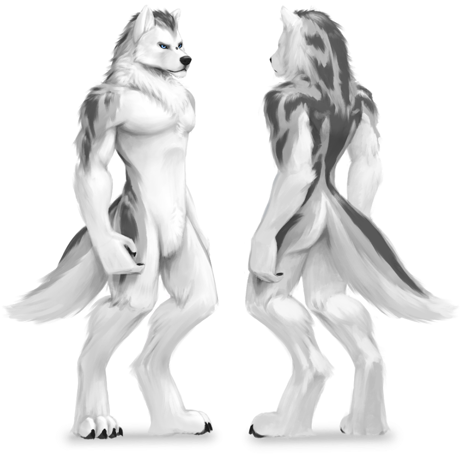
Art by GeeWolf
Towards the end of the story, Decro gets a scar across his neck that's hidden under his fur, but more on that later.
The Plot
The story starts off with Decro encountering his nemesis for the next decade of his life, referred to as "the beast" in the story. The chapters jump back and forth between real life and an alternate reality, trying to live a normal life in one while he fights to survive the shapeshifting beast's attempts to kill him.
This switching between worlds, referred to in the story as the "shift", is how I came up with the title of the story. Zephyrius (IllIVIllI) and I were brainstorming to come up with one, when he suggested using "Decro | oɿɔɘᗡ". I liked the mirroring idea a lot, although it might imply that there's two Decros, which isn't the intent of the story. Instead I joined the two "o"s together with a strike through it, making it look like he was one wolf straddling two worlds.
Throughout the story, he gets more and more proficient with his battles as he encounters Chris and Kerac in real life who help him to cope with his existential crisis. The years of battling the beast ends in chapter 7, where Decro decides to heed Kerac's advice, opting to do all he can do to harm the beast instead of aiming only for its vital spots. He escapes with a life-threatening cut across his windpipe and gets rushed to the hospital to be treated.
The epilogue ends with Decro's friends giving him a weapon that he uses to fight the beast, knowing that the battles might not end, but he would still keep fighting anyway.
Themes
The central theme of the story is about a continuous and unwinnable fight. I wanted Decro's backstory to embody my own battle with depression, and hence that took on a central theme in the story. The story focuses on other side themes such as bullying, meeting friends, contemplation of suicide, and finally hope.
Depression
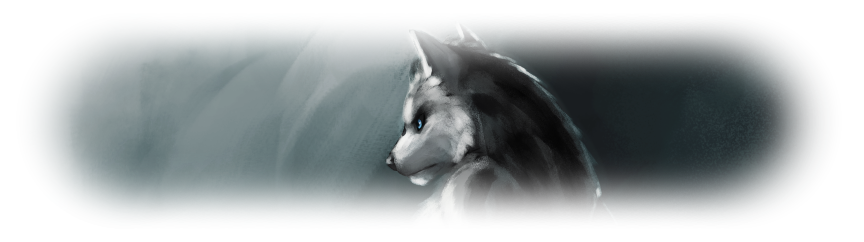
Art by ValentinaPaz
The theme of depression is expressed very heavily in the story. The short sentences at the top of each chapter come together to form a short prose on depression.
Nothing's there. But it wasn't always nothing.
There used to be something. But you just can't find it anymore.
It's not about feeling sad. Or being happy. Or fear. Or anger.
It's just nothing.
That nothingness eats at you. Night and day. Day and night.
One year segues into the next and you don't even care.
Because nothing matters.
Getting out of bed is hard.
Washing up is hard.
Feeding yourself is hard.
How does one find the will to live in a
life that doesn't seem worth living?
Push it deeper. Bury it.
Hide it behind a facade of smiles and happiness.
Maybe it will go away.
It's just like frostbite. You feel numbness.
But it tears you apart cell by cell, atom by atom.
Until everything crumbles apart and there's nothing left.
Maybe it's all futile.
Maybe it goes on forever.
Maybe you'll never win.
But maybe you'll find a reason.
Maybe you'll fight the meaning behind the fight.
And maybe you'll keep fighting.
The words formed a huge part of my encounter with depression. Other people may experience depression differently, so I do not claim that this is how everyone battling depression feels.
My journey started after a major exam when I was twelve. I had just spent half of my life studying and preparing for this milestone, having it all end unsatisfyingly after a few days. Throughout this time, I had teachers telling us all that "oh primary school was the best time of my life". As much as the intent was to get us to appreciate school more, it's really a depressing thought to hold. Was that all there was to look forward to in life? More years of studies, major exams, and then finally the working world which adults are so eager to bemoan. "Oh man, life as a student was so much better."
So I wanted something more out of life. I thought that I had to find some deeper meaning to life for myself. The more I searched for meaning, the more I realized I couldn't find it. The world was a messed up place, with selfish people and corrupt systems. Morals and ethics weren't coded into the fabric of the universe.
Faced with this bleak outlook in life, I fell into depression.
Years later, I met Kerac, and I rambled on and on about the futility of life and my sad existential crisis. I'm sure he was annoyed through the first few years of knowing him. However, he told me "I try not to think about it," and I took that advice.
I stopped thinking about it. Instead of trying to live the rest of my life (along with the rest of the human condition) in the present, I instead took it step by step. I started by living for the day. Did all my schoolwork on the last minute (i.e. on the day it's due) as I played games to while away the time.
As I set aside more time to spend on just "me", I slowly gained back my mental and emotional strength. I started living not just for the day, but for the next few days. A few days turned into a week, which turned into months, which turned into years. Now, I can make plans for the future, set goals, and work towards them with renewed motivation which I thought was lost years ago.
I wouldn't consider myself as depressed, but I still struggle with its aftereffects. But unlike my battle with depression, this is a battle that I choose to fight.
Symbolism
Depression
The structure of the story is meant to embody the fight with depression. In the story, Decro is pulled from the real world into the alternate reality and forced to fight a beast, coming close to death on several occasions in battles that nobody else could see.
My battles with depression felt like that. Sure, one could say depression is all in one's mind. But the pain is real. The hurt is real. And to me, that makes the fight real. I suffered in silence for years, not telling anyone because there's always the fear that someone might invalidate my agony with a careless comment, "Oh, he's just doing it for attention."
Other small hints on the theme of depression were the references of self-cutting in chapter 2 and the contemplations of suicide in chapter 6.
The Abyss
The abyss in chapter 1 reflects how I first got into depression. I wanted to find a meaning to life, to solve the mystery of existence. That was the abyss I kept staring into, in hopes of finding "the way", the same way Decro was led repeatedly to stare into the abyss to get out. The abyss turns out to be the source of the beast that plagues him for the years that followed.
The use of the abyss is also a nod to a quote by Nietzsche:
He who fights with monsters should be careful lest he thereby become a monster.
And if thou gaze long into an abyss, the abyss will also gaze into thee.
The original meaning is slightly different from that of how the story goes, but I think there's some poetic irony in how my search for meaning in life cost me it.
The Beast
The beast is the main antagonist of the story, battling against Decro from fight after fight. It's meant to be a physical representation of depression Throughout the story, the shapeshifting beast takes on many grotesque forms during its assault on Decro, reflecting how depression can attack in many forms: numbness, guilt, existential angst, fatigue, and so on.
The beast is also unrelenting, its shifting forms and recovering limbs signifying the tight grip of depression that many people struggle to escape from.
In chapter 7, Decro somewhat defeats the beast as he escapes. Since then, the "shifts" had been less frequent, and battling the beast felt easier. This is the point I eventually "got out" of depression. It wasn't a specific point in my life as it was more of a long and drawn out process as I got used to living again.
The beast never went away for me. In times of stress and pressure, I do feel this instinctive urge to kill myself again, despite every logical fibre of me knows that I have no reason to do so. It's a part of who I am, and this is something I still fight.
The Combat
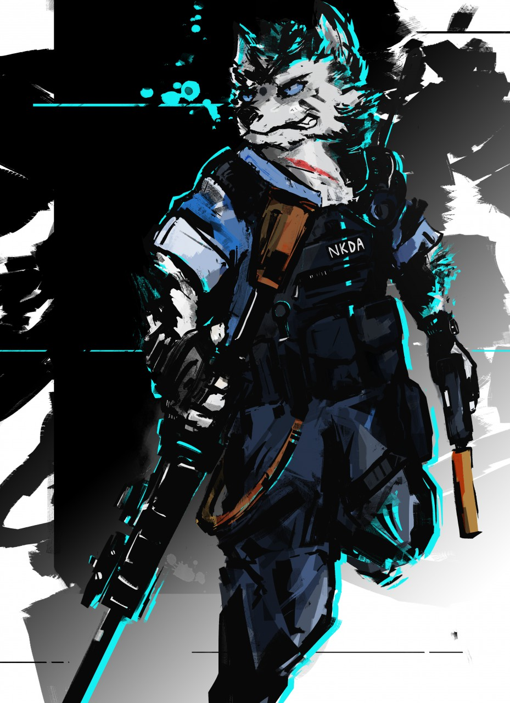
Art by SirSpaceDragurn
There is a progression of Decro's combat proficiency throughout the story. At the start, he had no weapons, instead having to run away from the beast. In the next battle in chapter 3 with the skyscraper, he was equipped with an automatic pistol he had no idea how to use. The battle in chapter 5 depicted him using his rifle, as if he was experienced with it.
The weapons represent the tools that I used in trying to find meaning in life: philosophical models, logical deduction, the Socratic method, and so on. I tried almost anything I can think of, and yet it was hard to divine meaning out of the apparently-cold universe in which I thought I lived in during that point in time.
The weapons also came easily to him, found conveniently in the
train as if he knew it was there, or simply appearing on him. All our mental tools and models are always at our disposal should we choose to apply them to life.
Throughout the story, Decro has a strange fascination in hitting the beast's weak spots, stemming from his desire to kill the beast in absolute defeat. This is akin to how I tried to solve depression by finding the meaning of life: trying to nip the problem in the bud.
This turned out to be a bad approach, with each failure to "solve depression" only making the situation worse through its demoralizing results. Decro finally defeats it the way I "got out" of depression: through taking it one small step at a time, which eventually gave me back my meaning in life.
The Friends
In chapter 4 and 6, Decro encounters two friends: Chris and Kerac respectively.
Chris represents an online friend I used to know when I was about 14-15 years old. He has the chinese initials Z.H., although he called himself Chris when online. Our screen names and fake names were our way of protecting ourselves from stalkers in the online world.
I believe he claimed to be emo and slightly depressed too, and we connected on that. We talked a lot about life over MSN, pouring our hearts out to each other in the messages we typed to each other. To my 14-year-old self, it felt like we could understand each other's struggles.
He has definitely helped me through some of my tough times of depression. Since then, we've drifted apart and lost contact over the years, which was implied in his absence in the epilogue.
I still look for him every now and then. Perhaps one day we'll meet again. Until then, we'll see.
Kerac represents a friend that I met in high school. He has a fursona by the same name. Through the first few years of talking to him, I really ranted a lot about life. When he gave me the advice "I try not to think about it," I felt that he was being naive. Being blind to the world's problems didn't make it go away.
But it stuck to me, and I stopped caring. This energy gave me the strength to focus on the here and now of my own problems so I could actually solve them. I still consider that one line to be the biggest help for me through all these years.
Today, he's my best friend and we talk almost every day. As of this time of writing, we've known each other for 9 years, going on 10. Here's to many more years of friendship to come.
The epilogue also features a lot of friends that I've met in the Singaporean furry community. As with Chris, I don't know if they'll be friends that come and go, or friends that stay with me for life. But that doesn't matter. They're here now, and I'm going to treasure my time with them, regardless of what the future holds for us.
The Scar
The scar was something that was on my heart that I wanted to add to Decro's physical traits, even before the idea of this backstory was conceived. I consider myself a fighter, having pulled through my period of depression. Scars aren't wounds. Wounds hurt when you touch them, and they are a sign that something needs to be fixed. Scars are injuries that don't hurt anymore because its been healed.
Sadly, having a scar over one's eye has been overdone and overly edgy (sorry Kaz!) so I didn't go with that. Instead, I added it across his jugular as a symbol that life tried to take mine, but I survived.
The Epilogue
As I've explained, the beast never went away for me. That's fine: we all have our own problems, our own demons that we have to deal with. But I think the company of friends can be invaluable to the fight, and I chose to embody this in an overpowered energy cannon which Decro brings into the alternate world, ending the story with a hopeful pledge to keep fighting the good fight.
Final words
To those out there who are battling depression, I hope that you know that you're not alone. Reach out to someone. Talk to them. It might not feel like it'll ever get better now, but trust me, it will.
And if life ever gets you down and you want someone to talk to, I'll be here. :D
~ End? ~
Credits
This story is made possible only through the support of the FurAffinity community who have supported my stories as well as the members of the Singaporean furry community who have brainstormed fursona and storyline ideas with me, and have been with me through my ups and downs in life.
Special thanks to a few close friends who have made this story possible
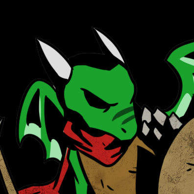
Kerac
My best friend of almost a decade now, who has stuck with me through thick and thin. I think without him, I wouldn't be where I am today.
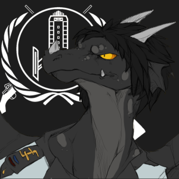
Tano'rath
A fellow writer and Singaporean on FurAffinity. We've pushed each other to write more often, experiment more bravely, and achieve greater heights.
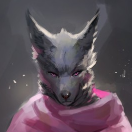
Zephyrius
For listening to all my ramblings of life.
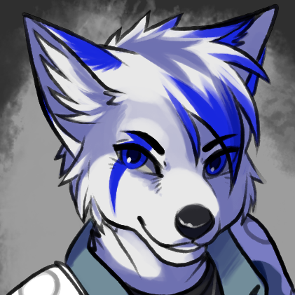
Kazuki
A great friend and support for the whirlwind of shit that is the world around us.
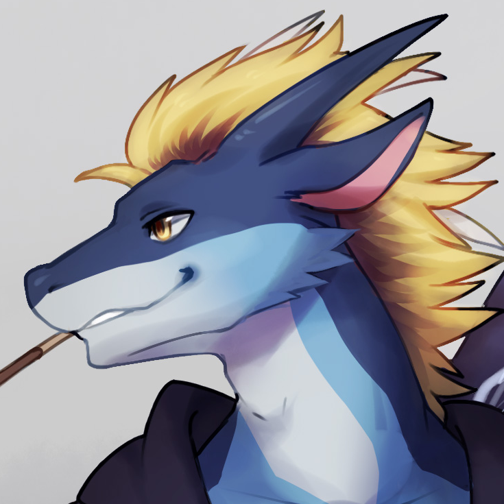
Teryx
For all our furry escapades.
Chris
My first close friend.
People who have helped critique this story and made it as good as it is now
Kerac
His eye for detail catches all the mistakes I make.
Oh and did I mention he's my best friend?
Tano'rath
The dumb dragon.
(Is dumb)
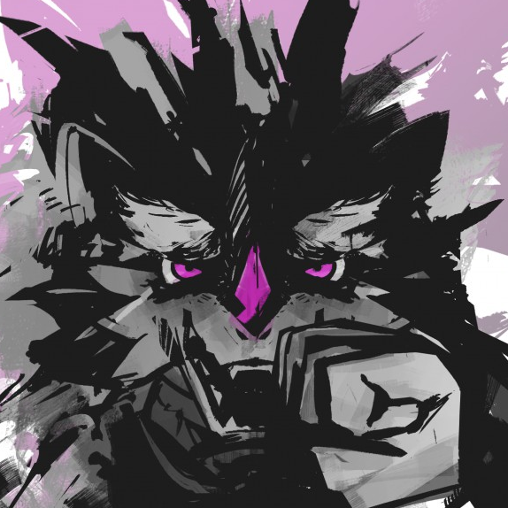
Sir
Space Dragon
Another stupid derg.
But he draws well, so he's not that stupid.
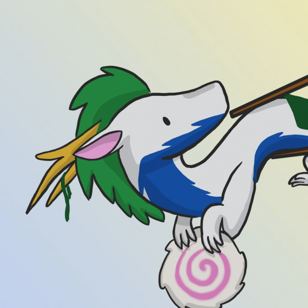
Anakie
Also known as Anarchy.
Speaks in a low-pitched GWRAWRAWRAR voice.
Zephyrius
Who stayed up till four in the morning with me reading my story.
GO TO SLEEP.
Cheers to the people I've known in the past; and for the impact you've had on my life
Cheers to the people I know now; may we stay friends for the years ahead.
Cheers to the people I will know in future; I eagerly await our first meeting.
May the intertwining of our lives be fruitful and rewarding.
Signing off,
TwistedSnakes
Bloopers
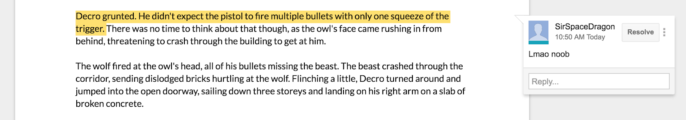
*Baps*
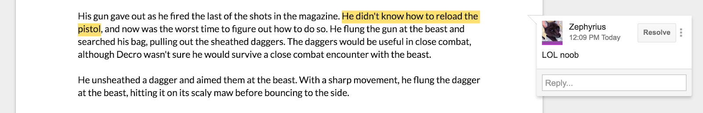
*Double baps*
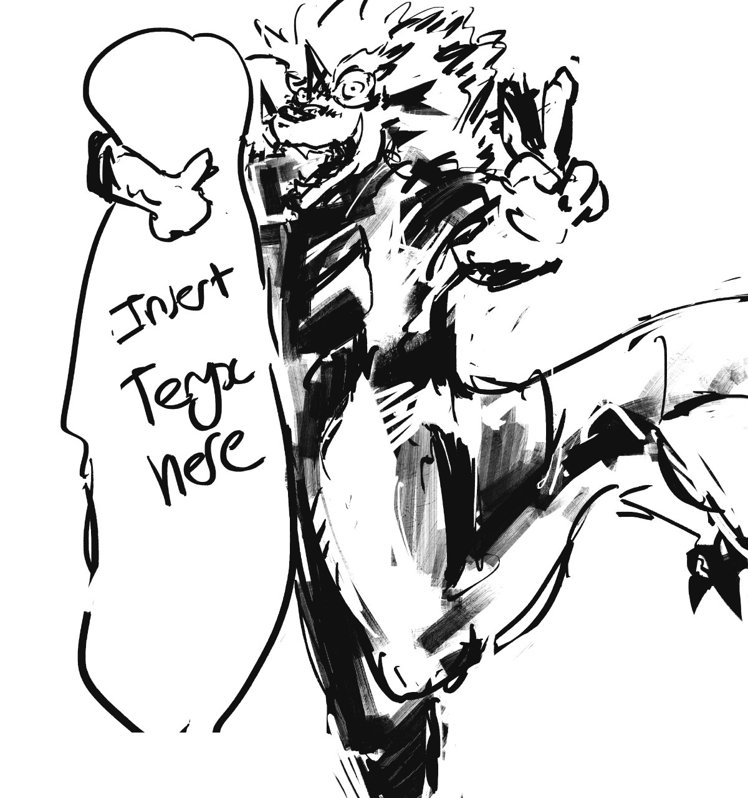
SirSpaceDragon and Teryx as portrayed in the story